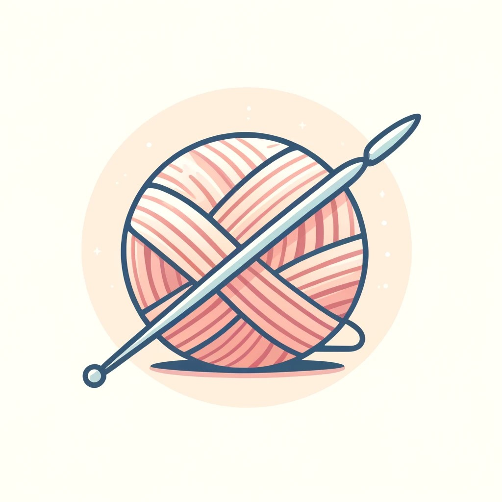

¿Como hacemos nuestros pedidos?
Nos encanta hacer realidad las ideas de nuestros clientes. Puedes pedir tu diseño personalizado: nos cuentas qué te gustaría, buscamos juntos el patrón perfecto y nos ponemos manos a la obra. Para comenzar el proceso, solicitamos una seña que asegura tu pedido, y luego te mantenemos al tanto de cada paso hasta que tu pieza única esté lista. ¡Es tan fácil como imaginarlo y tejerlo!
¿Que materiales usamos?
Trabajamos con una amplia variedad de lanas e hilos de alta calidad, adaptándonos a las necesidades de cada proyecto. Desde algodones suaves hasta lanas gruesas y cálidas, seleccionamos los mejores materiales para asegurar que cada pieza sea duradera y hermosa. Utilizamos distintos tipos de agujas, desde finas para detalles delicados hasta gruesas para tejidos más robustos, siempre buscando el acabado perfecto en cada creación.
Testimonios de clientes
"La mamá del bebé quedó chocha... ¡Le encantó! Mil gracias de nuevo" Rosana- Monte
"No me aguanté la sorpresa y le di el regalo a Florencia. ¡Le encantó y quedó fascinada! Muchas gracias". Ariel- Lobos
"Gracias a vos, recibí un hermoso trabajo" Gabriela- Monte